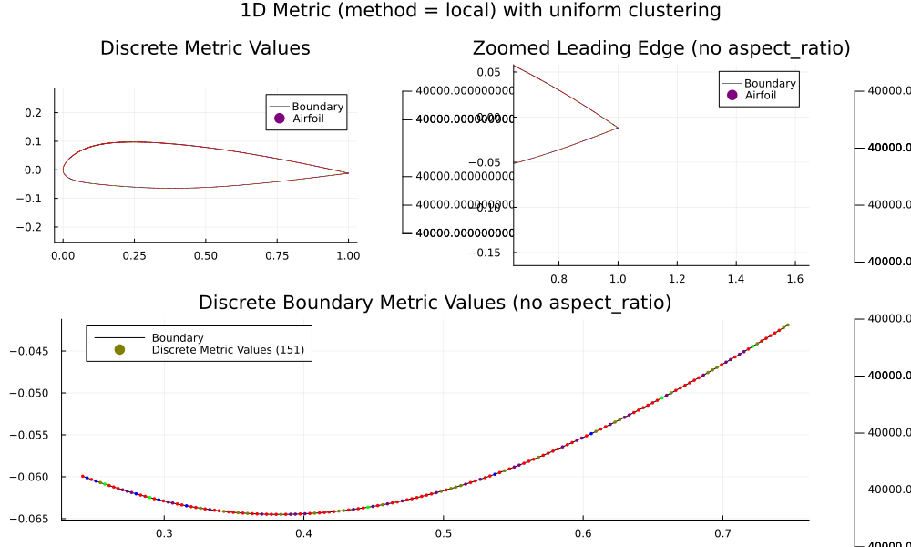
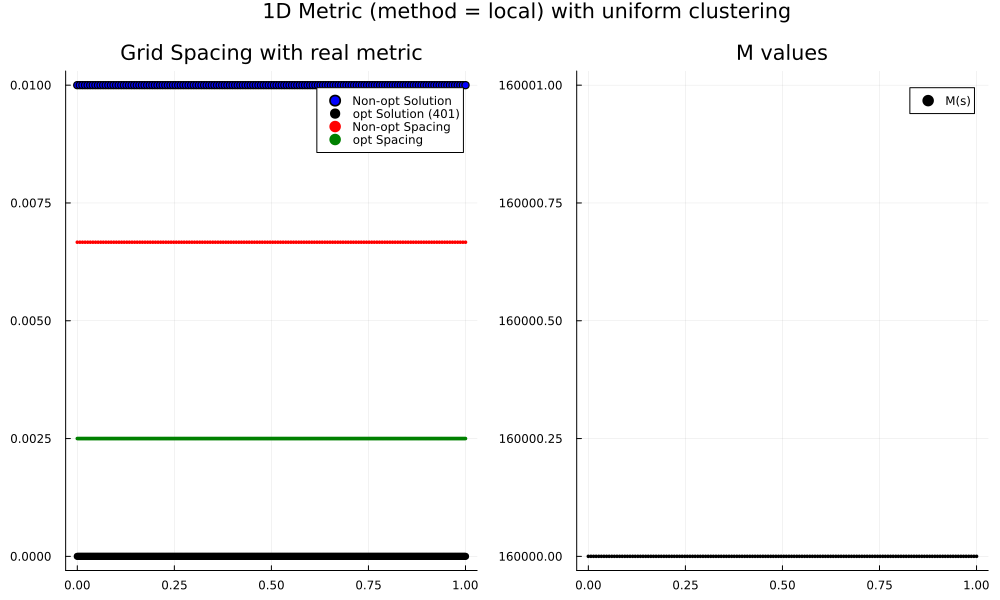
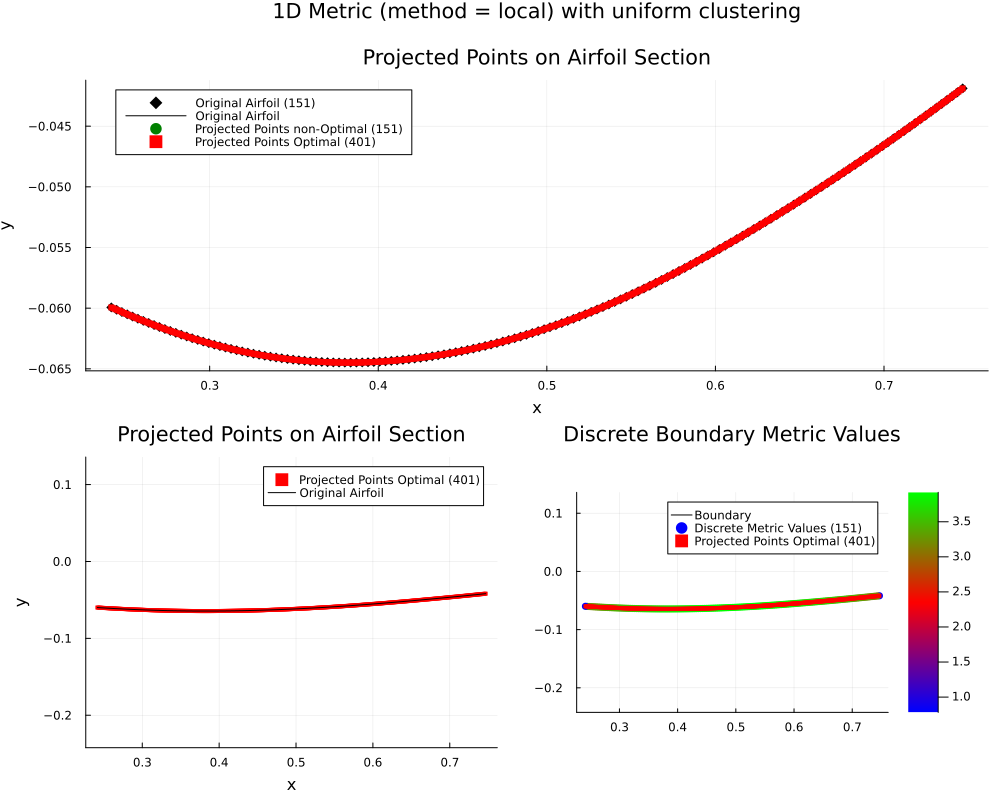
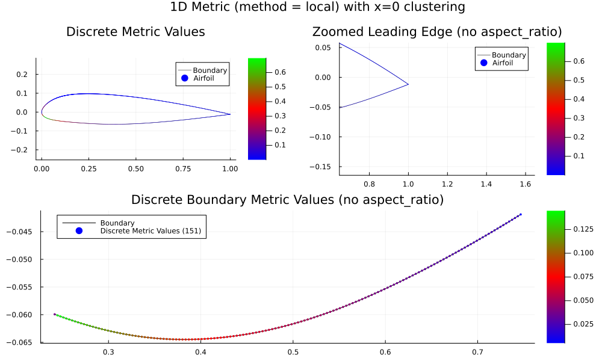
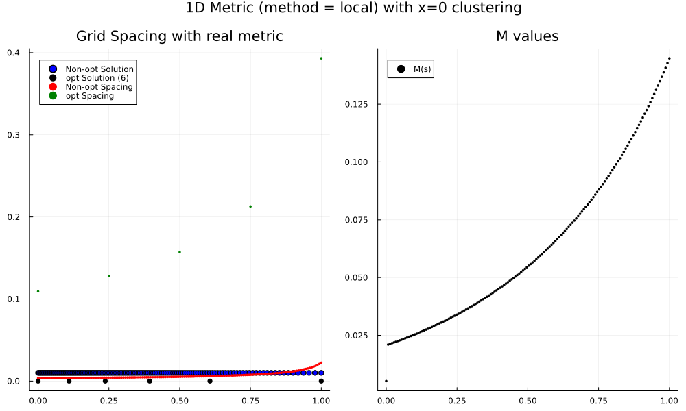
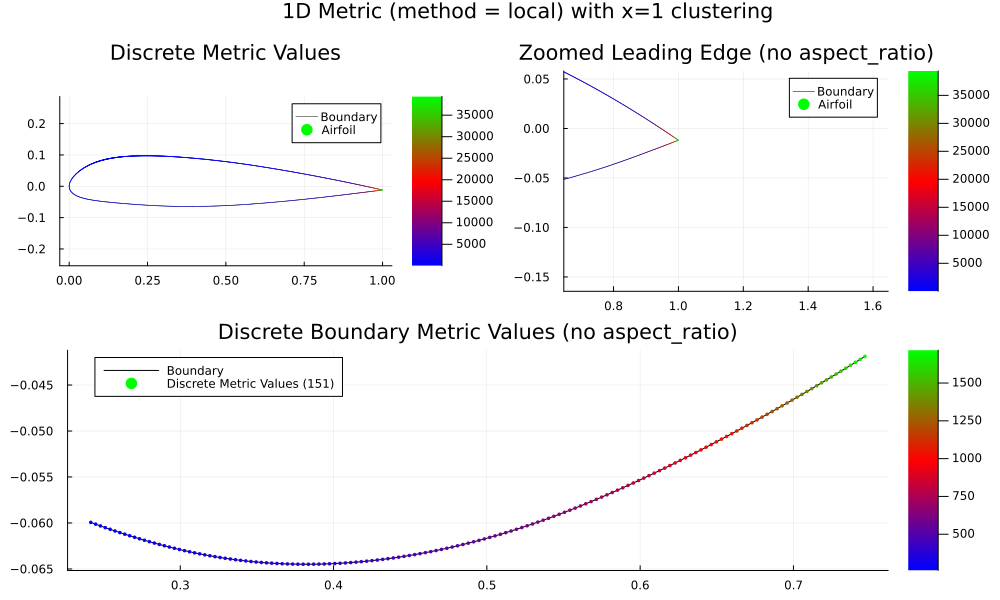
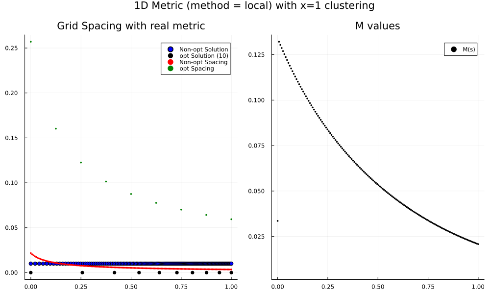

Mapping the 2 Dimensional Problem to 1 Dimension
Since we aim to construct grid in $\Omega \subset \R^2$, we need a method to convert the 2D problem into a 1D problem. While we have the 1D equation
\[\begin{align*} -8 \sigma^4 M^2 x_s^2 x_{ss} - 4 \sigma^4 M M_x x_s^4 - 4 \sigma^2 m M x_{ss} - 2 \sigma^2 m M_x x_s^2 = 0, \end{align*}\]
we need to reduce the dimension of $x \in \R^2$ and $M \in \R^{2 \times 2}$.
Mathematical Idea
Suppose we wish to solve the grid spacing along a discrete boundary $\Gamma$ given by the points $\gamma_i \in \R^2$ for $i=1,2,\dots, n$ where $n$ is the total number of points along the boundary. In-between each point is a linear interpolation $\Gamma_i$ for $i=1,2,\dots,n-1$ which defines the piecewise-continuous boundary.
Metric Tensor Field
To find the grid spacing according to the 2D metric tensor $M$, let's compute a new $m$ value to represent the desired metric stretching in $\R$ rather than $\R^2$. Let's define $m_i$ as
\[m_i := \frac{1}{|\gamma_{i+1} - \gamma_{i-1}|^2}(\gamma_{i+1} - \gamma_{i-1})^\top \cdot \begin{pmatrix} M_{11} & M_{12} \\ M_{21} & M_{22} \end{pmatrix}_i \cdot (\gamma_{i+1} - \gamma_{i-1}), \quad i=2,\cdots, n - 1,\]
and one sided differences for the edges
\[m_1 := \frac{1}{|\gamma_{2} - \gamma_{1}|^2}(\gamma_{2} - \gamma_{1})^\top \cdot \begin{pmatrix} M_{11} & M_{12} \\ M_{21} & M_{22} \end{pmatrix}_1 \cdot (\gamma_{2} - \gamma_{1}),\]
\[m_n := \frac{1}{|\gamma_{n} - \gamma_{n-1}|^2}(\gamma_{n} - \gamma_{n-1})^\top \cdot \begin{pmatrix} M_{11} & M_{12} \\ M_{21} & M_{22} \end{pmatrix}_n \cdot (\gamma_{n} - \gamma_{n-1}).\]
Let's call this method "local." This is basically a local normalized product between a central difference on $x_i$ and the local $M_i$ tensor.
Don't Do this
Another method would be to take $m_i$ as the nuclear norm (the sum of the singular values ) of the 2D tensor corresponding with $x_i$. We don't want the metric to change value and want it to correspond with the local direction.
$x(s)$
Let's first solve the problem in $[0,L]$ where $L$ is the length of $\Gamma$.
If we discretize $\hat{\Gamma} = [0,L]$ by $\hat{\gamma}_i \in \R$, let's preserve that $|\hat{\Gamma}_i| = |\Gamma_i|,$ or that the distances between points remain the same. Since we have linear interpolation, this equates to forcing the angle between $\Gamma_i$ to be flat.
Let $\hat{x}_i \in \R$ by the solution in $\hat{\Gamma}$, then to get the solution distribution $x_i \in \R^2$ along $\Gamma$, we can place the point $x_i$ on the linear interpolation $\Gamma_j$ at the same distance between $x_{j-1}$ and $x_{j+1}$ as $\hat{x_i}$ is between $\hat{\gamma}_{j-1}$ and $\hat{\gamma}_{j+1}$.
Algorithm
We can compute the metric value $m_i$ using the following
function GetMetricValues(points, getMetric; method = "local")
#---------------------------
# Description: Compute metric between points depending on method
# Input: 2xn array of points
# Output: 1xn array of metric
#---------------------------
n = size(points, 2)
m_vals = zeros(Float64, n)
diff = zeros(Float64, 2, n)
diff[:, 2:n-1] = points[:, 3:n] - points[:, 1:n-2]
diff[:, n] = points[:, n] - points[:, n-1]
diff[:,1] = points[:, 2] - points[:, 1]
for i in 1:n
M = getMetric(points[1, i], points[2, i])
localDiff = diff[:, i]
m_vals[i] = localDiff' * M * localDiff
end
return m_vals
endComparison of results are shown in
Results
We look at three cases
Let's compare the distribution of points for four different metrics
- Uniform.
- Clustering at $x=0.0$
- Clustering at $x=1$
Uniform
Metric Values

ODE Solution

Final Distribution

$x=0$ Clustering
Metric Values

ODE Solution

Final Distribution

$x=1$ Clustering
Metric Values

ODE Solution

Final Distribution